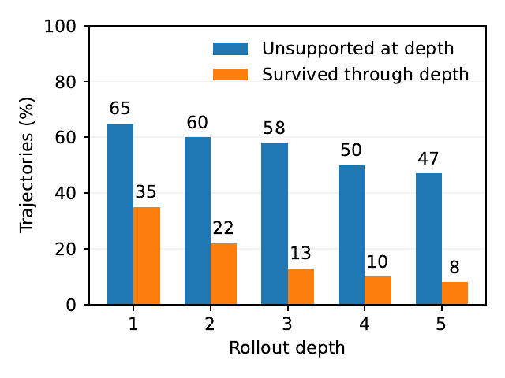
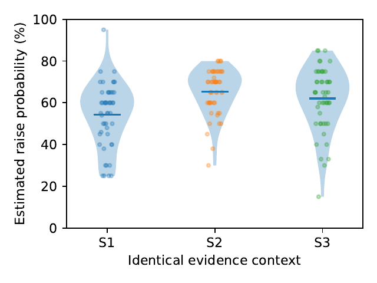
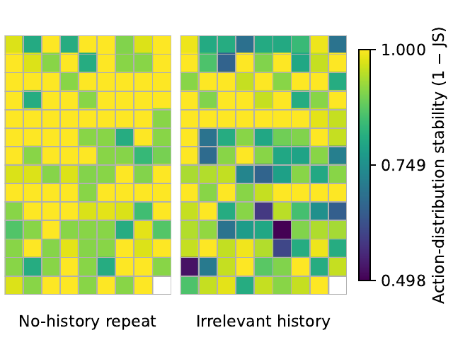
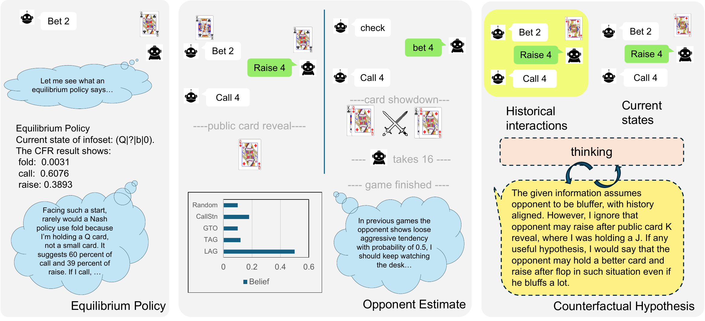
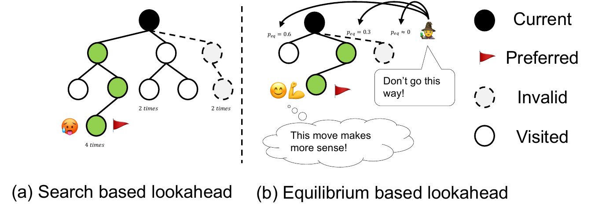
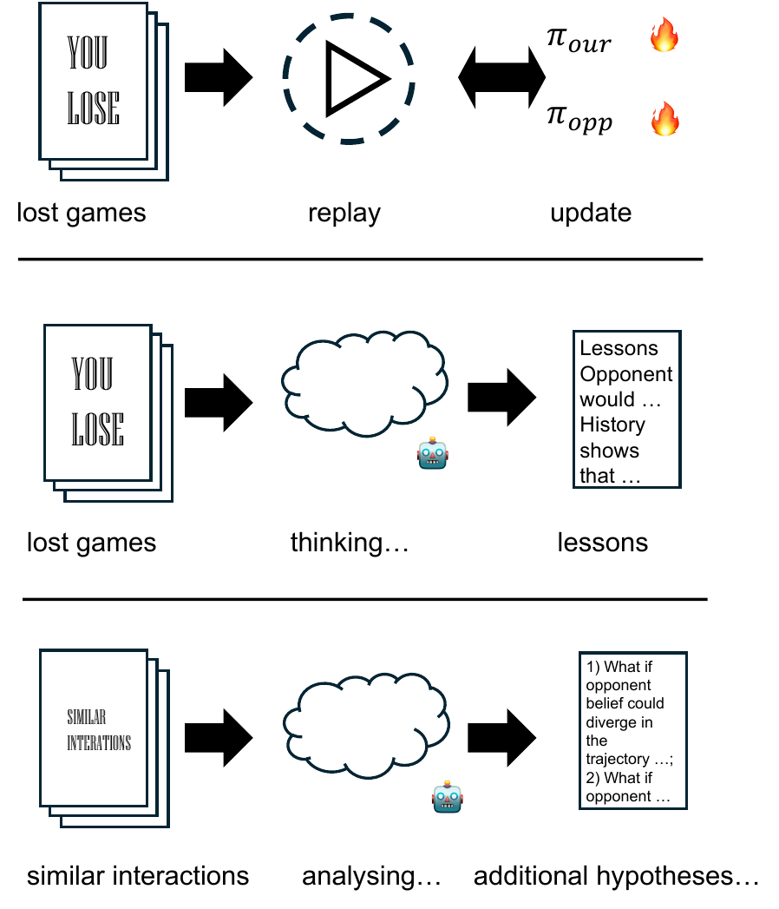
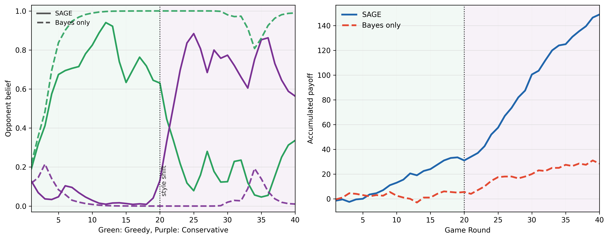
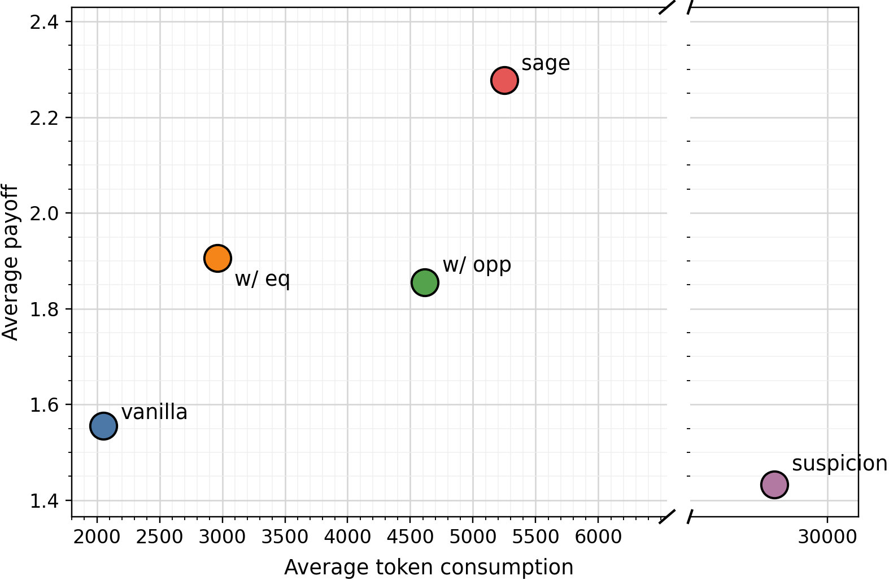
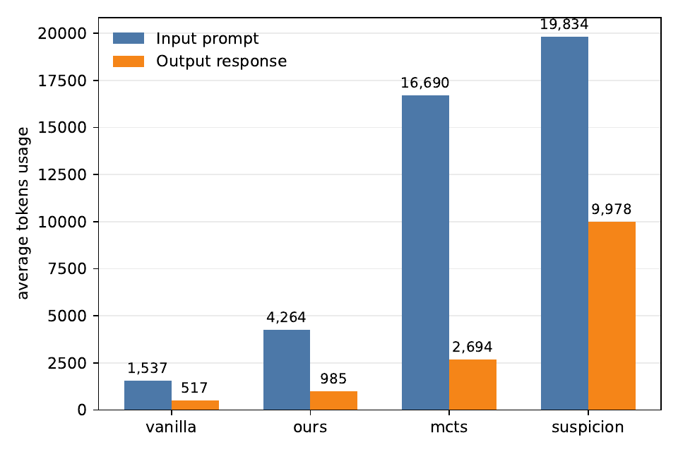
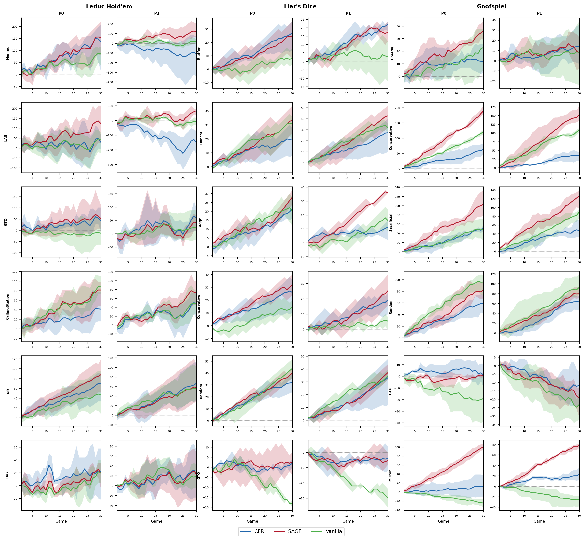

01

Unsupported assumptions
The rollout invents evidence that the game never provided. Free style reasoning generates rollout that's against the game environment or previous assumptions, in each rollout depth.
SAGE
We identify three recurring problems in free-form LLM reasoning for repeated imperfect-information games: unsupported assumptions about hidden states, unstable opponent beliefs that change across similar situations, and ineffective historical calibration that treats more history as automatically useful.
Our solution is SAGE: an inference-time framework that gives the LLM three structured reasoning references—an equilibrium policy, an online belief over opponent behavior, and counterfactual hypotheses extracted from similar interactions. These references do not directly modify the policy; the LLM interprets them with the current state and chooses the final action.
A parameter-training-free framework for Leduc Hold’em, Liar’s Dice, and Goofspiel.
THE PROBLEM
In imperfect-information games, a plausible explanation is not enough. The agent must keep its assumptions, beliefs, and past lessons consistent with the actual game.

The rollout invents evidence that the game never provided. Free style reasoning generates rollout that's against the game environment or previous assumptions, in each rollout depth.

The same behavioral evidence can produce different guesses in different scenes, ranging from 20% of estimated raise prob, up to 90%+.

Given history messes around the original reasoning process and makes action unstable. Left panel data is more stable when no history is provided.
THE IDEA
SAGE keeps the LLM in the loop. Its modules do not directly rewrite the policy; they provide structured reasoning references that the LLM can weigh against the current game state.

An equilibrium policy offers a disciplined strategic anchor—not a forced action.
Recent actions update a soft distribution over styles and expose how the opponent may deviate.
Similar interactions become counterfactual guidance: another consideration the LLM can use.
WHY THIS COMBINATION?
SAGE does not ask the model to generate an ever-longer tree of possibilities. It doesn't use a policy model, oppoennt policy model or RAG style history/memory module. It supplies compact signals into reference that the LLM can read interpret before choosing their own next action.



EFFECIENCY
SAGE is extremely token-efficient. It saves a lot of token input and output, but maintains a relatively high performance.


Win rate and mean net payoff across five seeds, both player positions, and six opponent styles per game.
| Game | Opponent | Vanilla | LLM (Eq) | LLM (Opp) | Suspicion | MCCFR | SAGE | ||||||
|---|---|---|---|---|---|---|---|---|---|---|---|---|---|
| WR | Payoff | WR | Payoff | WR | Payoff | WR | Payoff | WR | Payoff | WR | Payoff | ||
| Leduc | LAG | 31.7% | +68 | 35.0% | +70 | 35.0% | +84 | 33.3% | +58 | 28.3% | +26 | 43.3% | +102 |
| TAG | 53.3% | +49 | 46.7% | +34 | 48.4% | +32 | 56.7% | +6 | 43.3% | +24 | 56.7% | +35 | |
| CallStat. | 43.3% | +51 | 38.3% | +68 | 38.3% | +64 | 43.3% | +59 | 38.3% | +66 | 45.0% | +74 | |
| Nit | 65.0% | +26 | 68.4% | +36 | 71.7% | +40 | 86.7% | +53 | 86.7% | +47 | 90.0% | +48 | |
| Maniac | 36.7% | +88 | 40.0% | +120 | 43.3% | +116 | 38.3% | +79 | 51.7% | +151 | 41.7% | +141 | |
| GTO | 45.0% | -2 | 40.0% | +15 | 45.0% | -2 | 50.0% | +3 | 56.7% | +15 | 53.3% | +10 | |
| Total | 45.8% | +280 | 44.7% | +343 | 47.0% | +334 | 51.4% | +258 | 50.8% | +329 | 55.0% | +410 | |
| Liar’s Dice | Bluffer | 55.0% | +6 | 66.7% | +20 | 50.0% | +0 | — | — | 76.7% | +32 | 71.7% | +26 |
| Honest | 70.0% | +24 | 80.0% | +36 | 70.0% | +24 | — | — | 65.0% | +18 | 90.0% | +48 | |
| Aggressive | 65.0% | +18 | 76.7% | +32 | 61.7% | +14 | — | — | 65.0% | +18 | 76.7% | +32 | |
| Conservative | 53.3% | +4 | 70.0% | +24 | 48.4% | -2 | — | — | 66.7% | +20 | 81.7% | +38 | |
| Random | 88.3% | +46 | 83.4% | +40 | 81.7% | +38 | — | — | 83.3% | +40 | 83.3% | +40 | |
| GTO | 33.3% | -20 | 41.7% | -10 | 48.3% | -2 | — | — | 53.3% | +4 | 45.0% | -6 | |
| Total | 60.8% | +78 | 69.8% | +142 | 60.0% | +72 | — | — | 68.3% | +132 | 74.7% | +178 | |
| Goofspiel | Greedy | 56.7% | +66 | 41.7% | -3 | 56.7% | +40 | — | — | 46.7% | +41 | 61.7% | +92 |
| Conservative | 91.7% | +279 | 76.7% | +190 | 86.7% | +296 | — | — | 65.0% | +94 | 90.0% | +326 | |
| Sacrificial | 56.7% | +117 | 66.7% | +134 | 70.0% | +130 | — | — | 46.7% | +67 | 75.0% | +254 | |
| Random | 73.3% | +191 | 70.0% | +136 | 76.7% | +193 | — | — | 83.3% | +171 | 70.0% | +117 | |
| Mirror | 11.7% | -72 | 51.7% | +74 | 73.3% | +142 | — | — | 43.3% | +22 | 88.3% | +200 | |
| GTO | 25.0% | -61 | 28.3% | -23 | 20.0% | -63 | — | — | 25.0% | -6 | 33.3% | -1 | |
| Total | 52.5% | +520 | 55.8% | +508 | 63.9% | +738 | — | — | 51.7% | +389 | 69.7% | +988 | |
REPEATED INTERACTION
Across games, opponent styles, and player positions, SAGE’s payoff accumulates over repeated interaction rather than depending on a single lucky decision.

CASE STUDY
Click through representative decisions from the three games. The cards separate the reference, the LLM’s reasoning, and what happened next.
TRY IT YOURSELF 🕹️
Train the small CFR policy locally, then play Leduc against the agent. No pretrained weights are bundled.
conda create -n SAGE python=3.11 -y
conda activate SAGE
pip install -r requirements.txt
python runs/leduc/train_cfr.py \
--output-dir results/leduc/cfr_model
python main.py leduc \
--p1 Human --p1-method human \
--p2 CFR --p2-method cfr \
--seed 42OPEN RESEARCH CODE